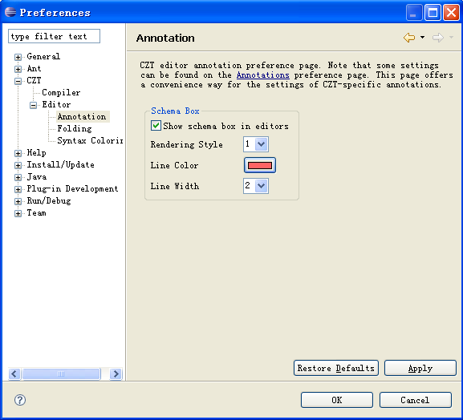

Annotation Preferences
The CZT > Editor > Annotation preference page offers a convenient way for the general settings of CZT-specific annotations in the CZT editors

The following properties can be set in this page:
Schema Box Annotation
- Show schema boxes
- Default: On
- Show schema boxes in the CZT Unicode editors.
- Rendering Style
- Default: 2
- The style (1 or 2) used for rendering the schema boxes in the CZT editors.
- Line Color
- Default: Red (RGB 255, 100, 100)
- The color used for drawing schema boxes.
- Line Width
- Default: 0
- The width of the line in a schema box. The available options are 0, 1, 2, 3, 4 and 5. If it is set to 0, the box will be drawn as fast as possible.